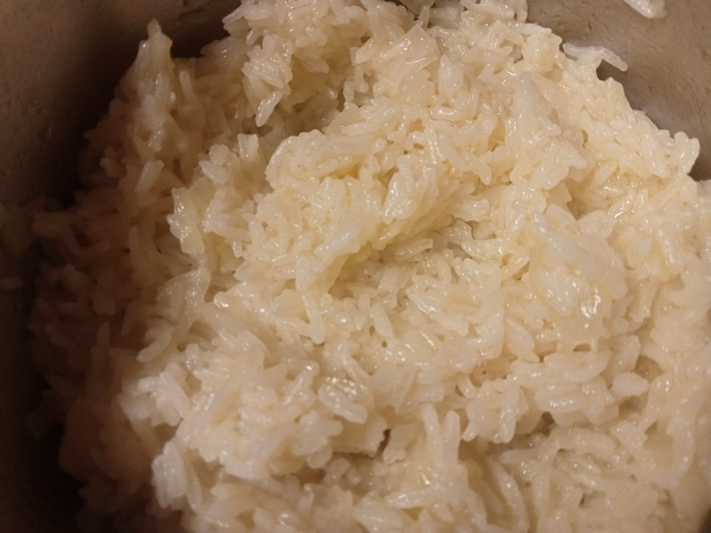

Thai jasmine rice

Description
A simple and good side dish for the most various meals.
Ingredients
- half of a small mug with thai jasmine rice;
- 1 small onion;
- 1 clove of garlic;
- OLive oil;
- A full small mug of water.
Steps
- Start by adding olive oil to a pan and the onion. When the onion is translucent add the garlic (Don`t forget to mix);
- After 3 minutes add the rice, close the pan with a lid and let the rice cook for about 15 minutes.
Home